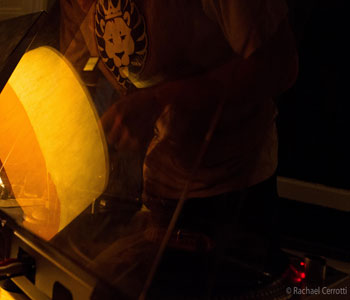
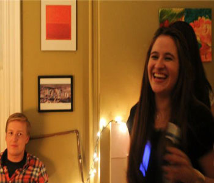

- Day 1: Empty Space
 Salvaged Materials
Salvaged Materials- Painted Boards
- Start of Construction
- The Piano aka the Stern
- Port Construction
- Starboard Constuction
- Start of Day 2
- Start of the Bow
- Erecting the Beam
- Vessel during the day
- Vessel at the end of Day 3
- Starboard view & Passenger Seat
- Vessel Interior
- Bow Window
- Jellyfish Light
- Projector installation
- Projector in Work
- Furnished Interior
- Create or Destroy Station
- Paint and Broken Ceramics
- Creating
- Destruction closeup
- Julian last minute tinkering
- Enjoying the projector
- Willerd L Turntables
- Rogers and Willerd setting up
- Set by Wizard, Willerd L, & Bama
- Willerd L premiere
- JG laser show
- JG laser show
- Bow POV
- Bow Dry Ice
- Dry Ice Cloud
- Fog
- Fog Close Up
- Glow
- Susan and David @ the create & destroy station
- Smiles